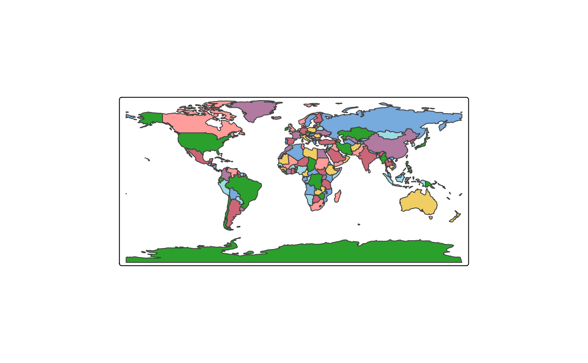
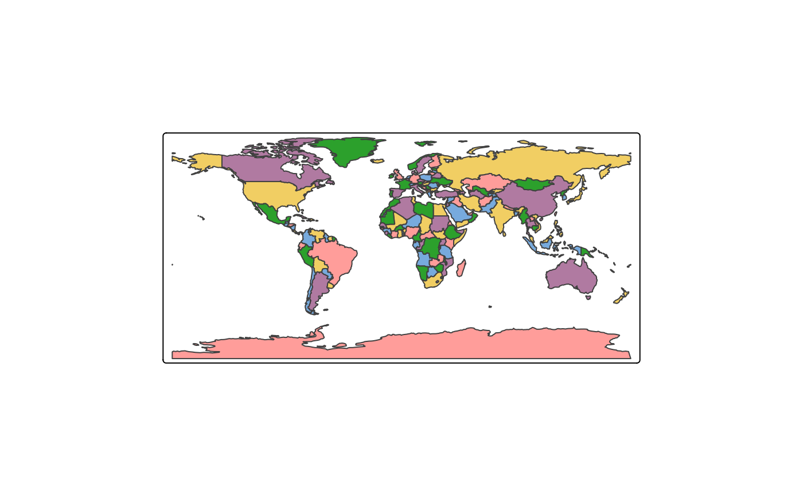
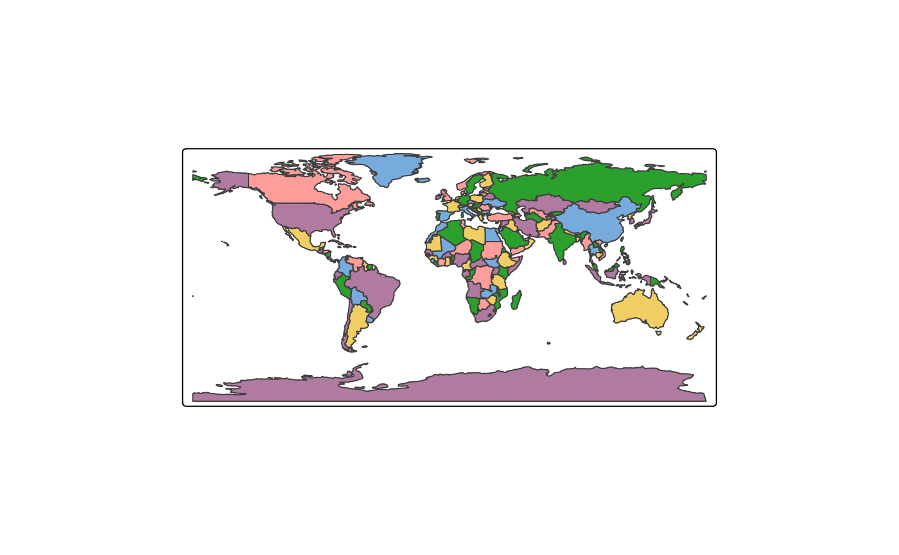

Fill polygons such that adjacent ones get different colors. This is a
geometry-derived map variable: it is not taken from the data, but computed
from the shape itself, with tmaptools::map_coloring(). The plain variable
name "MAP_COLORS" does the same with the default settings.
Arguments
- ncols
Number of colors. By default the palette decides: as many colors as it provides, so that a palette of three colors gives three groups rather than seven groups that have to share three colors. A number given here is capped by what the palette can supply.
- permutation
Which of the many colorings of the map to use. Each whole number gives a different, equally valid map.
- ...
Passed on to
tmaptools::map_coloring(), e.g.algorithm.
Details
A map can be colored in many equally valid ways. permutation picks one of
them: raise it until the map looks good. It changes both which polygons share
a color and which color each group is given, and the result does not depend
on the random seed, so a map keeps its colors between plots.
All colors are used about equally often, so no color dominates the map. When there are too few for adjacent polygons to differ everywhere, more are used, and a message says so.
Examples
tm_shape(World) +
tm_polygons(fill = "MAP_COLORS")

# fewer colors
tm_shape(World) +
tm_polygons(fill = tm_map_colors(5))
 # another coloring with the same number of colors
tm_shape(World) +
tm_polygons(fill = tm_map_colors(5, permutation = 1))
# another coloring with the same number of colors
tm_shape(World) +
tm_polygons(fill = tm_map_colors(5, permutation = 1))

# arguments of tmaptools::map_coloring() can be passed on
tm_shape(World) +
tm_polygons(fill = tm_map_colors(5, algorithm = "greedy"))
